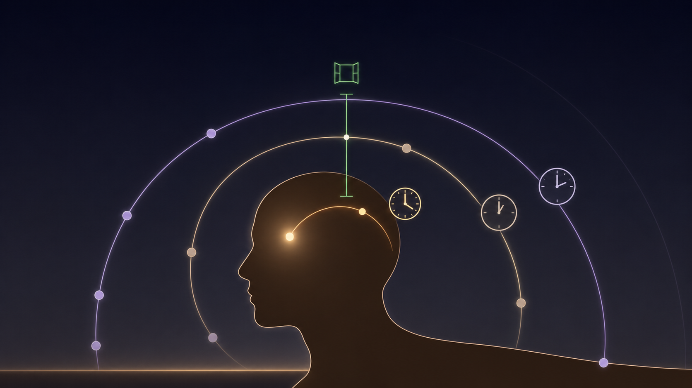

Sources: 26 peer-reviewed studies, including RCTs from The Lancet, Nature Medicine, Neurology, Brain, and Cephalalgia.
Published: May 19, 2026 · Last reviewed: May 19, 2026
Key Takeaways
- A narrow window of roughly 20 to 120 minutes opens with the first pain of a migraine attack and closes once central sensitization is established. Treatment inside this window is exponentially more effective.
- Cutaneous allodynia — the spreading skin sensitivity that 60–80% of migraine patients develop during an attack — is the visible marker that the window is closing.
- Major migraine drugs (sumatriptan, rizatriptan, ubrogepant) show roughly double the pain-free response rates when taken during mild pain versus moderate or severe pain.
- Aura is not the moment to dose a triptan. The trigeminovascular system isn’t activated yet, so there is nothing for the drug to block. Wait for the headache to start, then dose immediately.
- The phase 3 PRODROME trial showed that ubrogepant taken during the prodrome — before any headache — prevented headache progression in nearly half of attacks.
- A rapid-response protocol means carrying medication, identifying your most reliable early signal, treating at first sign, choosing the fastest formulation when speed matters, and respecting medication-overuse limits.
The clock you didn’t know was running
You feel it. Faint pressure behind the eye. A shimmer at the edge of your vision. A neck too heavy for your head. Maybe it’ll pass. You go back to your screen. Twenty minutes later a switch flips, and the pain is no longer in your head — your head is the pain.
That decision you almost made — to take medication right then, at the first whisper — could have saved your day. Maybe your week. Because somewhere inside your brain, a countdown started the moment those symptoms appeared. Your medications are racing against it.
Researchers call it the window. It opens with the first stab of pain and slams shut once your nervous system crosses a threshold called central sensitization. I have lived with migraine for 30 years. Nothing I have learned about this disease has changed my behavior more than learning about the window.
What the window actually is
In a landmark 2005 paper, Harvard neurologists Rami Burstein and Moshe Jakubowski put numbers on it. Triptans — the most common prescription migraine drugs — can render an attack pain-free within a narrow span of 20 to 120 minutes from the onset of pain. After that, the window closes[1].
The same group mapped the underlying timeline in detail. Pain signals from the meninges — the membranes around the brain — sensitize peripheral pain neurons within minutes. Around the 60-minute mark, second-order neurons in the brainstem start to sensitize too[2]. That second sensitization produces cutaneous allodynia: the maddening sensation that brushing your hair, wearing glasses, or resting your cheek on a pillow now hurts[2],[3]. By two hours, allodynia spreads. By four hours, it’s everywhere[2].
This isn’t a minor pharmacological footnote. Between 60% and 80% of migraine patients develop cutaneous allodynia during an attack[4]. And once central sensitization sets in, the receptors triptans rely on are no longer where the action is. The pain has moved upstream, into circuits the medication cannot reach[5].

Numbers that change how you think about your medicine cabinet
For decades, regulatory rules forced researchers to test acute migraine drugs only on moderate or severe pain. Clinicians knew better. When studies finally tested treatment the way patients wanted it — early, while pain was still mild — the contrast was startling.
| Drug | Dose | Taken early (mild) | Taken late (mod–severe) |
|---|---|---|---|
| Sumatriptan[6] | 100 mg | 67% pain-free | 36% |
| Sumatriptan[6] | 50 mg | 51% pain-free | 31% |
| Rizatriptan (TAME)[7],[8] | 10 mg | 57–70% pain-free | 31% (placebo) |
| Ubrogepant[9] | 100 mg | 55% pain-free | 26% |
| Ubrogepant[9] | 50 mg | 47% pain-free | 24% |
These aren’t small effect sizes. These are drugs that work roughly twice as well — sometimes more — simply because of when you took them.
Why the window closes
Three things happen simultaneously as a migraine ramps up. Each one makes treatment harder than the last.
Your brain rewires. Central sensitization isn’t a metaphor. Neurons in the trigeminal nucleus caudalis become hyper-excitable, firing in response to stimuli that normally wouldn’t bother them at all[4],[5]. Once that state is locked in, drugs that worked at the peripheral level can’t undo it.
Your stomach stops. Gastric motility slows during an attack. Studies dating back to the 1970s showed that absorption of NSAIDs, acetaminophen, and even some triptans — zolmitriptan in particular — is significantly delayed during a migraine[10]. The pill you swallow at hour two may not reach your bloodstream until hour four. By then, central sensitization has long since closed the window. If oral tablets are your only option, some clinicians prescribe them alongside a prokinetic antiemetic such as metoclopramide to speed gastric emptying. The evidence is strongest for NSAIDs and paracetamol; for sumatriptan and rizatriptan, absorption is largely unaffected even during attacks, so routine combination isn’t generally recommended[10]. This is a prescription decision to discuss with your doctor.
The attack starts before the pain. Functional brain imaging by Peter Goadsby and colleagues caught activation in the hypothalamus, brainstem, and prefrontal cortex during the premonitory phase — before any headache had begun[11]. The yawning, the fatigue, the neck stiffness, the food cravings, the strange irritability some people feel hours before a migraine: those aren’t warnings of an attack. They are the attack, just earlier than the pain.
A note on aura — and why triptans don’t help during it
Aura is a different beast. While the prodrome reflects hypothalamic and brainstem activity, aura is a wave of electrical and metabolic change rolling across the cortex — a phenomenon called cortical spreading depression[23]. At this stage, the trigeminovascular pain system isn’t activated yet. There are no peripheral pain signals from the meninges for a triptan to block, because the pain machinery hasn’t started running.
This is why every major guideline tells aura sufferers the same thing: wait until the headache phase begins, then take the dose immediately — even if the pain is still mild. The window for the triptan opens with the first throb, not with the first visual zigzag.
Prodrome and aura are two different early phases[15],[18], and only one of them is the moment to dose with a classic triptan.
The newest data: treating before the pain even starts
The PRODROME trial took the radical step of treating before the headache. Published in The Lancet in 2023 and re-analyzed in Nature Medicine in 2025, the phase 3, double-blind, placebo-controlled crossover trial gave 477 participants — all able to reliably predict an oncoming attack — either ubrogepant 100 mg or placebo during their prodromal symptoms.
The result: 45.5% of ubrogepant-treated events were not followed by a moderate or severe headache within 24 hours, against 28.6% on placebo (p<0.001)[12],[13]. Relief of fatigue, light sensitivity, neck pain, and trouble concentrating began as early as one hour after dosing[13].
For anyone who can recognize their own prodrome, the window may open before the pain does.
Why we wait — and why we should stop
If early treatment works so much better, why don’t we do it?
The French TEMPO study asked patients directly. The top reasons for delaying: 67.7% believed the attack might resolve on its own; 35.4% were saving the medication for “real” attacks; 29.2% didn’t have the medication on hand[14]. Add the fear of side effects, the dread of medication-overuse headache, and the honest difficulty of telling an early migraine apart from a passing tension headache, and the delay starts to look reasonable.
The math, though, runs the other way. Saving a triptan for a severe attack means guaranteeing the attack becomes severe — and guaranteeing the medication works worse when you finally take it. It’s the pharmacological equivalent of waiting until the house is fully ablaze to call the fire department.
How to build a rapid-response protocol
A protocol takes a few attacks to calibrate. The structure is the same for almost everyone.
Identify your most reliable early signal. For some people it’s a specific neck tension. For others, yawning, hunger, mood drift, or a strange déjà vu. Track it in a diary or a migraine app until you can say with confidence: when this happens, a migraine follows within Y hours about X% of the time. That sentence is your trigger threshold.
Carry medication everywhere. A pill in the bathroom cabinet is not the same pill as the one in your pocket. The medication you don’t have on you cannot beat the clock.
Treat at first reliable signal — not later. For those without aura, treat at the first symptom you trust. For those with aura, wait for the headache phase to begin and dose immediately, even if pain is still mild.
Use the fastest available formulation when speed matters. Subcutaneous sumatriptan has a response rate of up to 80% because it bypasses the gut and reaches the bloodstream within minutes[16]. Nasal sprays and orally dissolving tablets are intermediate. Standard tablets are slowest — and most affected by gastric stasis.
⚠ When to seek urgent medical attention
Even with a perfect rapid-response protocol, some headaches are not your usual migraine. Seek emergency care immediately if you experience: a sudden, severe “thunderclap” headache that peaks within seconds; headache with fever, stiff neck, or confusion; new neurological symptoms (weakness, slurred speech, vision loss) that don’t resolve; or a headache that is unlike any you’ve had before. These can signal stroke, meningitis, or other serious conditions and require evaluation in an emergency department, not at home with your usual medication.
Stay inside the medication-overuse limits. This is the trade-off. Treating too frequently can paradoxically cause more headaches, a condition called medication-overuse headache (MOH). The thresholds: triptans, opioids, or combination analgesics on more than 10 days a month, or simple analgesics like paracetamol and ibuprofen on more than 15 days a month, for more than three months in a row[17]. If you’re routinely brushing the ceiling, the problem isn’t your acute treatment — it’s that you need a preventive plan. Talk to your neurologist about modern preventives: CGRP monoclonal antibodies, oral gepants taken preventively, topiramate, or beta-blockers, depending on your profile.
![A still life from overhead: a small fabric pouch with a green drawstring open on a worn wooden surface, alongside a blister pack of pills (one missing), a clear glass of water, a folded white cloth with a green border stripe, a small open leather-bound diary showing colored data marks like constellations, a green pencil, and a simple analog wristwatch with a brown leather strap. Warm morning light enters from the upper right, casting soft directional shadows. A single bright point of light catches between the glass and the diary.](images/window_pocket_kit.png)
The window is yours
I missed this window for the first 25 of my 30 years with migraine. Nobody told me it existed. I’d wait until the pain was undeniable, swallow a pill, and lose the day anyway. Then I read Burstein’s 2005 paper, and the geometry of my attacks rearranged itself.
Now I keep medication in three places — pocket, bag, bedside. I treat at the first neck twinge, not the third. The attacks I used to lose entire days to still happen. They just don’t take the day anymore.
The 20-minute window isn’t a deadline. It’s a gift the science has handed you — a few minutes when one decision can decide how the next 24 hours of your life unfold.
Most people miss it because no one ever told them it was there.
Now you know.
⚕ Full Medical Disclaimer
This article is for educational purposes only and is not a substitute for medical advice, diagnosis, or treatment. The information here is based on peer-reviewed research and clinical guidelines, but every person’s migraine pattern, medication response, and contraindication profile is different.
Triptans, gepants, and prokinetic antiemetics are prescription medications. Triptans are contraindicated in people with ischemic heart disease, uncontrolled hypertension, hemiplegic or basilar migraine, and during pregnancy unless specifically advised by a specialist. Gepants have their own contraindications and drug interactions. Decisions about which acute treatment to take, at what dose, in what formulation, and how often, should be made with a qualified neurologist or headache specialist who knows your full medical history.
The “20-minute window” framework described in this article applies to acute treatment of typical migraine attacks. It does not apply to secondary headaches caused by other medical conditions. If you experience a new type of headache, a sudden severe headache, or a headache accompanied by neurological symptoms, seek urgent medical evaluation rather than self-treating at home.
If you live with frequent or chronic migraine, prevention — not just acute treatment — is part of a complete plan. Modern preventives, including CGRP monoclonal antibodies and oral gepants, may significantly reduce attack frequency. Discuss options with your doctor.
References
- Jakubowski M, Levy D, Goor-Aryeh I, Bajwa ZH, Burstein R. “Terminating Migraine With Allodynia and Ongoing Central Sensitization Using Parenteral Administration of COX1/COX2 Inhibitors.” Headache: The Journal of Head and Face Pain, 45(7):850–861 (2005). doi:10.1111/j.1526-4610.2005.05153.x. Study design: Clinical study. n=27.
- Burstein R, Cutrer MF, Yarnitsky D. “The development of cutaneous allodynia during a migraine attack: clinical evidence for the sequential recruitment of spinal and supraspinal nociceptive neurons in migraine.” Brain, 123(Pt 8):1703–1709 (2000). doi:10.1093/brain/123.8.1703. Study design: Clinical case study with quantitative sensory testing.
- Burstein R, Yarnitsky D, Goor-Aryeh I, Ransil BJ, Bajwa ZH. “An association between migraine and cutaneous allodynia.” Annals of Neurology, 47(5):614–624 (2000). doi:10.1002/1531-8249(200005)47:5<614::AID-ANA9>3.0.CO;2-N. Study design: Prospective clinical study. n=42.
- Mínguez-Olaondo A, Quintas S, Morollón Sánchez-Mateos N, et al. “Cutaneous Allodynia in Migraine: A Narrative Review.” Frontiers in Neurology, 12:831035 (2021). doi:10.3389/fneur.2021.831035. Study design: Narrative review.
- Burstein R, Jakubowski M. “Analgesic triptan action in an animal model of intracranial pain: a race against the development of central sensitization.” Annals of Neurology, 55(1):27–36 (2004). doi:10.1002/ana.10785. Study design: Preclinical experimental study.
- Cady RK, Sheftell F, Lipton RB, et al. “Effect of early intervention with sumatriptan on migraine pain: retrospective analyses of data from three clinical trials.” Clinical Therapeutics, 22(9):1035–1048 (2000). doi:10.1016/S0149-2918(00)80083-1. Study design: Retrospective analysis of three RCTs. n>1,000 (pooled).
- Mathew NT, Hettiarachchi J, Alderman J. “Tolerability and safety of eletriptan in the treatment of migraine: a comprehensive review.” Headache, 43(9):962–974 (2003). doi:10.1046/j.1526-4610.2003.03190.x. Study design: Pooled analysis.
- Cady R, Martin V, Mauskop A, et al. “Efficacy of Rizatriptan 10 mg administered early in a migraine attack.” Headache, 46(6):914–924 (2006). doi:10.1111/j.1526-4610.2006.00466.x. Study design: Two placebo-controlled RCTs (TAME1, TAME2). n>1,000.
- Lipton RB, Blumenfeld A, Jensen CM, et al. “Efficacy of Ubrogepant in the Acute Treatment of Migraine With Mild Pain vs Moderate or Severe Pain.” Neurology, 99(17):e1905–e1915 (2022). doi:10.1212/WNL.0000000000201031. Study design: Post hoc analysis of phase 3 trial. n=808 participants, 19,291 attacks.
- Tfelt-Hansen PC. “Delayed absorption of many (paracetamol, aspirin, other NSAIDs and zolmitriptan) but not all (sumatriptan, rizatriptan) drugs during migraine attacks and most likely normal gastric emptying outside attacks. A review.” Cephalalgia, 37(9):892–901 (2017). doi:10.1177/0333102416644745. Study design: Critical review.
- Maniyar FH, Sprenger T, Monteith T, Schankin C, Goadsby PJ. “Brain activations in the premonitory phase of nitroglycerin-triggered migraine attacks.” Brain, 137(Pt 1):232–241 (2014). doi:10.1093/brain/awt320. Study design: Functional neuroimaging (PET). n=8.
- Dodick DW, Goadsby PJ, Schwedt TJ, et al. “Ubrogepant for the treatment of migraine attacks during the prodrome: a phase 3, multicentre, randomised, double-blind, placebo-controlled, crossover trial in the USA.” The Lancet, 402(10419):2307–2316 (2023). doi:10.1016/S0140-6736(23)01683-5. Study design: Phase 3 RCT (PRODROME). n=477.
- Goadsby PJ, Dodick DW, Schwedt TJ, et al. “Ubrogepant for the treatment of migraine prodromal symptoms: an exploratory analysis from the randomized phase 3 PRODROME trial.” Nature Medicine, 31:1502–1510 (2025). doi:10.1038/s41591-025-03679-7. Study design: Exploratory analysis of phase 3 RCT. n=477.
- Lantéri-Minet M, Mick G, Allaf B. “Early dosing and efficacy of triptans in acute migraine treatment: the TEMPO study.” Cephalalgia, 32(3):226–235 (2012). doi:10.1177/0333102411433042. Study design: Prospective multicentre observational study. n=346.
- Bates D, Ashford E, Dawson R, et al; Subcutaneous Sumatriptan International Study Group. “Subcutaneous sumatriptan during the migraine aura.” Neurology, 44(9):1587–1592 (1994). doi:10.1212/wnl.44.9.1587. Study design: Randomised placebo-controlled trial. n=171.
- Walling AD. “Clinical pearls for management of migraines.” Cleveland Clinic Journal of Medicine, 91(7):419–427 (2024). doi:10.3949/ccjm.91a.23074. Study design: Clinical review.
- Diener HC, Antonaci F, Braschinsky M, et al. “European Academy of Neurology guideline on the management of medication-overuse headache.” European Journal of Neurology, 27(7):1102–1116 (2020). doi:10.1111/ene.14268. Study design: Clinical practice guideline.
- Puledda F, Sacco S, Diener HC, et al. “International Headache Society global practice recommendations for the acute pharmacological treatment of migraine.” Cephalalgia, 44(8):3331024241252666 (2024). doi:10.1177/03331024241252666. Study design: International clinical practice guideline.
- Lipton RB, Munjal S, Buse DC, et al. “Unmet acute treatment needs from the 2017 Migraine in America Symptoms and Treatment Study.” Headache, 59(8):1310–1323 (2019). doi:10.1111/head.13588. Study design: Cross-sectional survey. n=15,133.
- Diener HC, Holle D, Solbach K, Gaul C. “Medication-overuse headache: risk factors, pathophysiology and management.” Nature Reviews Neurology, 12(10):575–583 (2016). doi:10.1038/nrneurol.2016.124. Study design: Review.
- Karsan N, Goadsby PJ. “Imaging the Premonitory Phase of Migraine.” Frontiers in Neurology, 11:140 (2020). doi:10.3389/fneur.2020.00140. Study design: Review of functional imaging studies.
- Aurora SK, Kori SH, Barrodale P, McDonald SA, Haseley D. “Gastric stasis in migraine: more than just a paroxysmal abnormality during a migraine attack.” Headache, 46(1):57–63 (2006). doi:10.1111/j.1526-4610.2006.00311.x. Study design: Clinical pharmacokinetic study.
- Goadsby PJ, Holland PR, Martins-Oliveira M, Hoffmann J, Schankin C, Akerman S. “Pathophysiology of Migraine: A Disorder of Sensory Processing.” Physiological Reviews, 97(2):553–622 (2017). doi:10.1152/physrev.00034.2015. Study design: Comprehensive review.
- Scholpp J, Schellenberg R, Moeckesch B, Banik N. “Early treatment of a migraine attack while pain is still mild increases the efficacy of sumatriptan.” Cephalalgia, 24(11):925–933 (2004). doi:10.1111/j.1468-2982.2004.00802.x. Study design: Prospective, controlled, open-label study. n=128.
- Pringsheim T, Davenport WJ, Mackie G, et al. “Canadian Headache Society guideline for migraine prophylaxis.” Canadian Journal of Neurological Sciences, 39(2 Suppl 2):S1–S59 (2012). doi:10.1017/s0317167100015109. Study design: Clinical practice guideline.
- Karsan N, Goadsby PJ. “Biological insights from the premonitory symptoms of migraine.” Nature Reviews Neurology, 14(12):699–710 (2018). doi:10.1038/s41582-018-0098-4. Study design: Review.